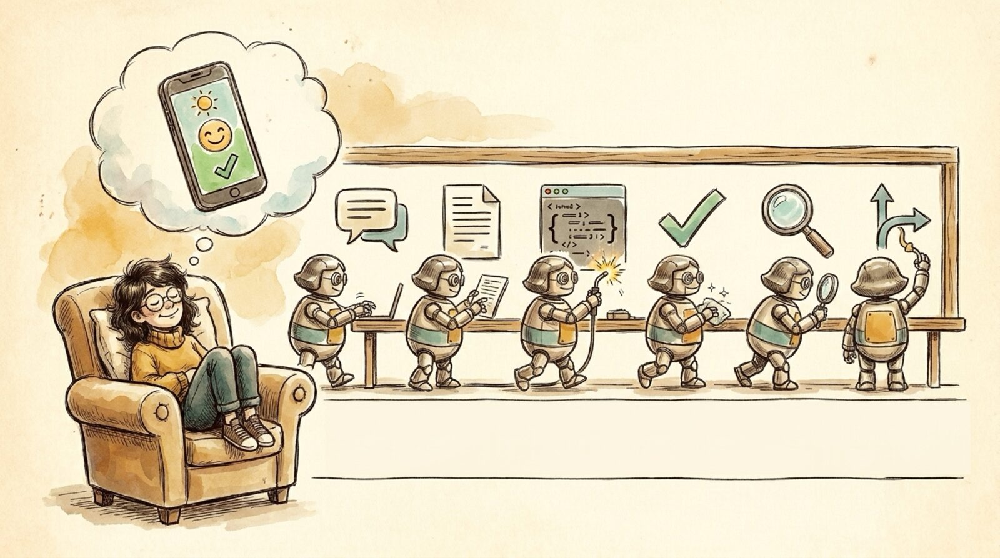

<section id="r03" data-transition="fade" style="background:#F5EEE0;color:#222222;font-family:Arial, Helvetica, sans-serif;padding:0;display:flex;flex-direction:column">

<aside>The dream in one breath: Slack thread -> PRD -> code -> tests -> review -> merged PR. Tempting to call it a compiler, but it isn't (a compiler transforms logic; we feed it intent). It's a feedback loop: see behavior, feedback, repeat.</aside>
</section>
